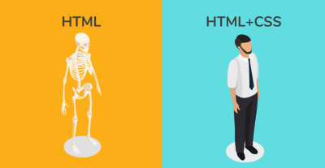

Difference Between HTML and CSS
(Go to end)
(E: test@viu.ca)
HTML and CSS is a way by which you can create awesome looking websites on your own. Both HTML and
CSS go together in building or developing a web page of any website, but both serve a very different and unique
purpose.
HTML and CSS are the fundamental blocks of any website. So, if you’re thinking of becoming a web developer
you must have knowledge of these two languages. But having great knowledge is not enough. You must be
aware of the main differences between HTML and CSS.

What is HTML?
Hyper-Text-Markup-Language (aka HTML) is a markup language that is used to define the basic structure of
any website. The basic structure consists of the header, body (main content), and footer of the website. And
what is a markup language? Any language that is understood by the browser and which tells the browser how
to render the data is known as a markup language.
HTML is used for defining the structure of all the content of a web page or a collection of web pages (website).
Now, HTML is all about tags! Tag is the most basic unit of an HTML webpage. HTML contains several tags
for different specific purposes. These tags provide display information to the browser, meaning each tag has
predefined display information, e.g., <a> tag defines hyperlink which is used to navigate to other web pages.
Have you ever thought about how many tags HTML has in total? HTML has 132 tags in total. It contains tags
like <h1> - <h6> for headings, <p> for paragraphs headings etc.
There are also different fonts and choosing the right font has a huge impact on how the readers experience a
website. You can find more about the fonts here
Features of HTML
- HTML is not case-sensitive language, meaning <html> is equivalent to <HTML>.
- HTML is platform independent because we can view it on any operating system.
- HTML follows a tree like structure. Html tag acts as a root element, then head and body tags act as child elements of head tag, and so on.
- HTML language is easy to understand and learn.
- HTML tags contain display information (or render information) that is useful to browsers like Chrome, Firefox, etc.
- It facilitates users to add images, videos, hyper images to web pages which makes it awesome and more user-friendly.
What is CSS?
CSS stands for Cascading Style Sheet. It is a style sheet language used to style the markup language like HTML.
If we consider HTML as the skeleton structure of the body, then CSS is the skin/overall look that covers it. CSS
allows you to handle multiple web pages using only one CSS file. CSS facilitates you to modify various
properties of HTML elements like you can modify background color/image, alignment to tags using margin,
position properties, can provide different font properties(font-family, font-size, color, etc.), or you also can
remove existing properties of HTML tags (like you can convert block elements to inline).
Another amazing property of CSS is its amazing transitions, which allow you to change property values
smoothly, over a given duration (useful to improve look and feel). CSS also facilitates the feature of animation,
which lets HTML elements gradually change from one style to another. Let’s look at one basic example of CSS
There is a website called W3Schools which is optimized for learning, testing, and training. You can find more
about the CSS on their website at here
Features of CSS
- Through CSS we separate the style/design from the content of the website, this improves content readability, accessibility and provides more flexibility.
- There are 3 ways to add a CSS file to your html document. These are: internal, external, and inline. This makes CSS more flexible.
- Internal CSS: We use internal CSS using the style tag inside the head tag. This is preferable when you want to add styling to three or four elements.
- External CSS: In the above example, we’ve used external CSS. To add an external CSS file, we use the <link> tag in the head tag of the html document.
- Inline CSS: This is handier in comparison with the above two when we need to define one or two properties to a specific tag (here we use style attribute inside any tag).
- CSS provides multiple selectors through which we can access any element/child element/group of elements/specific element from an HTML document.
Comparison chart:
Let us look at some key differences between HTML and CSS.
|
HTML |
CSS |
| 1 |
Hypertext Markup Language |
Cascading Style Sheet language. |
| 2 |
Structures the content on the web page. |
Adds style to the content of a web page. |
| 3 |
Just like the skeleton of the human body. |
Provides looks and appearance to that body. |
| 4 |
We can use CSS with HTML. |
CSS is useless without HTML. |
| 5 |
May not be so responsive to all devices. |
CSS makes responsive web applications. |
| 6 |
It is not used for presentation and visualization. |
CSS is used for presentation and visualization. |
| 7 |
Save with extension .html or .htm |
External CSS saved with extension .css |
This is the end.(Go to top)
Go to previous page